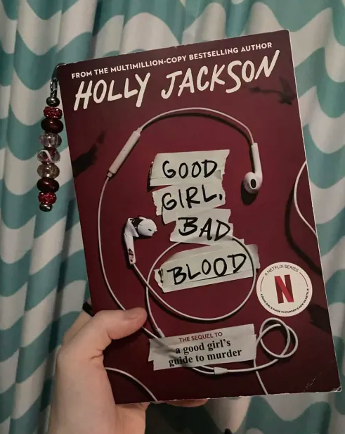

beaded bookmarks are one of my favorite things to make because they are so much prettier than a regular paper bookmark and you can also make them to match the colors of your book (I used red and white beads to match my book in the picture!)
I bought little metal bookmarks that you can put beads on, but you can also just do this with ribbon. put your beads on your metal or ribbon in whatever pattern you choose. then make sure to secure both sides so the beads don’t come off. then you can put it on whatever page you are on of your book!